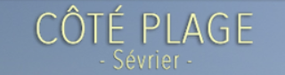
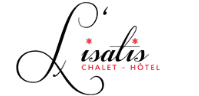
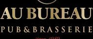

06 29 66 13 89
06 29 66 13 89
 Télécharger le cv
Télécharger le cv
 LyssProGm@gmail.com
06 29 66 13 89
Télécharger le cv
LyssProGm@gmail.com
LyssProGm@gmail.com
06 29 66 13 89
Télécharger le cv
LyssProGm@gmail.com
01/07/2013 au 01/06/2017
Restaurant le Contresens
Annecy Haute-Savoie
Authentique Café Culinaire, concept unique, une cuisine raffinée
et de surprenant mélange gustatif.
De la lignée des 'Clos des Sens', à présent remplacer par 'Brasserie Brunet' depuis avril 2018.

25/05/2012 au 01/09/2012
Restaurant éphémère Côté Plage
Sevrier-Plage Haute-Savoie
Une agréable saison au bord de la plage de Sevrier, cuisine fine,
recette de saisons avec des produits frais cuisiné avec soins.
De la lignée du restaurant 'Le Terrasse Café' situé dans la vallée de Megève.
20/09/2010 au 01/05/2012
Bowling du Mt-Blanc
Sallanches Haute-Savoie
Amiens Picardie
Sallanches:
Complexe familiale contenant des activités pour tous les âges, 10 pistes de bowling, salle de lazer-game, salle de jeux vidéo,
un restaurant agréablement placé face au Mont Blanc, Service d’une cuisine s'adaptant aux saisons
Tout en restant abordable pour toute la famille.
Amiens:
Géant complexe contenant des activités pour toute la famille,
30 pistes de bowling, salle de lazer-game, salle de jeux vidéo, boite de nuit, un restaurant qui sert une cuisine fine, variées et
en s'adaptant aux saisons, se situant é deux pas du stade de la Licorne et de l'hippodrome.

01/07/2010 au 09/10/2010
La Bodega
Fort-Mahon Plage Picardie
Une agréable saison au bord de la plage de Fort-Mahon, cuisine de saisons, et recette à base de produit frais cuisiné avec soins.
Dans un décor immense qui nous plonge en Asie, avec une terrasse intime placé en arrière-cour
À l'abri du bruit en plein soleil.

01/12/2009 au 01/04/2010
Chalet Cocon ISATIS
Ménuires les 3 Vallées Savoie
Une saison fraiche dans un authentique chalet, grande terrasse, cuisine fine avec des produits issue de la Région,
soignée, dans une spacieuse et jolie salle dans le plus grand domaine skiable du monde
Idéalement placé face aux télésièges.
Restaurant également apprécié par David Douillet, le parrain des 'Ménuires'.
Agréable bar brasserie se trouvant au plein cœur du centre-ville d’Amiens, à deux pas de la cathédrale et a deux minutes du quartier st-leu.
Réputé pour l’originalité de ces cocktails chaud et froid, généreux qui s’accompagne avec un plat typique
de la région a des prix abordables, accueil chaleureux et espace lumineux.

mars 2008 – avril 2009
Au Bureau
Amiens Picardie
Le pub bar et brasserie issus d’une franchise libre, c’est un établissement connu dans toutes la France,
reconnue pour leur décoration rustique, ambiance Pub Anglais, une cuisine généreuse et abordable,
idéale pour faire la fête entre amis, ou encore suivre les évènements sportifs sur écran géant, en dégustant des cocktails.
Toute l’équipe est jeune, dynamique souriant, tout en sachant s’amuser avec les clients qui apprécie ces petits gestes.
mars 2007 – juillet 2007
La p’tite bourse
Amiens Picardie
Petit restaurant/bar placé a deux minutes de la cathédrale d’Amiens et 5 minutes du quartier st-Leu.
Service d’une cuisine régionale a des tarifs très abordables.
janvier 2003 – janvier 2005
AL'PATATRIE
Amiens St-leu Picardie
Petit restaurant se trouvant au plein cœur du quartier St-Leu,
proposant une cuisine originale à base de pomme de terre rôtie ‘la Samba’,
fine est agréable en bouche accompagné de divers recette typique de la région.